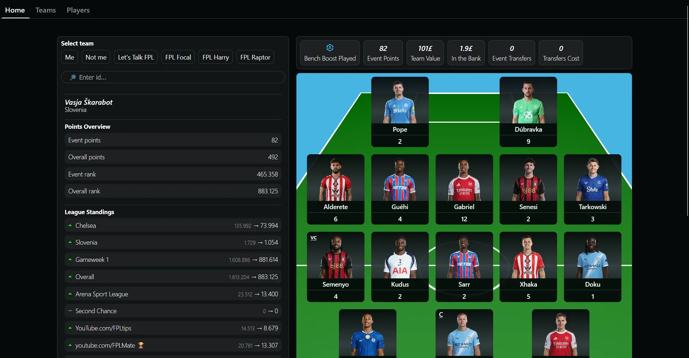
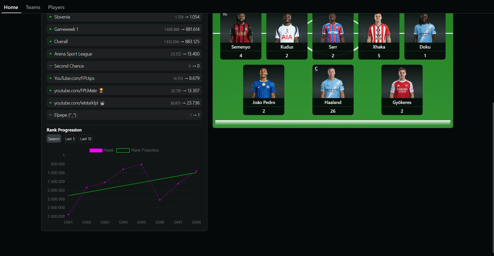

Web app
FPL Live
Fantasy Premier League tracker
01 About
This project allows users to track their FPL team. FPL (Fantasy Premier League) is a game where 'managers' from around the world compete with each other by picking a team of Premier League football players and scoring points based on goals scored, assists etc. I wanted to simplify the process of checking live points of my team and teams of other players that I wanted to compare to.
02 Stack
- Core
- Vue.jsExpress.js
03 Features
- Search team by id, or select it from predefined content creator id's
- Overview of current gameweek
- View league rankings with comparison on previous week
- View current squad and the points it accumulated
- Chart of team's progress throughout the season
In the future I'm planning to improve the app with more statistics of footballers and their teams and maybe implement some point predictions.
App gallery
Swipe, use the arrows or click to enlarge

